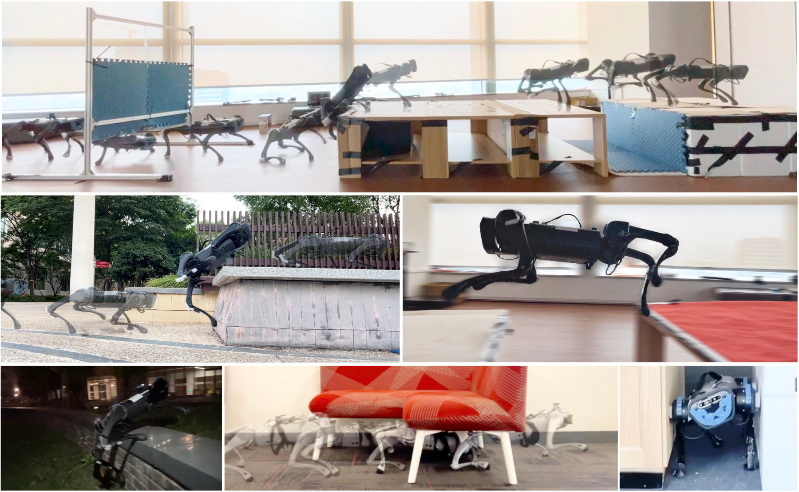
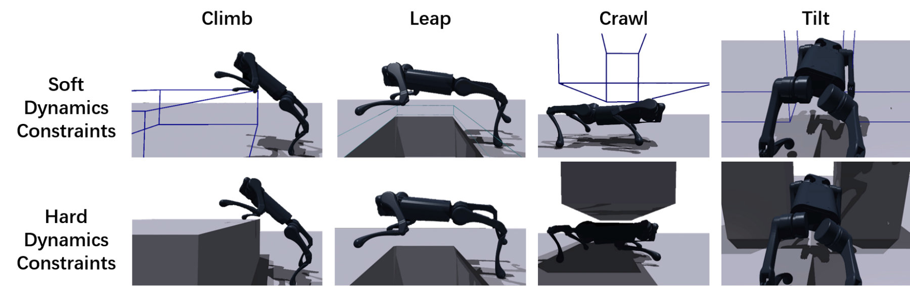
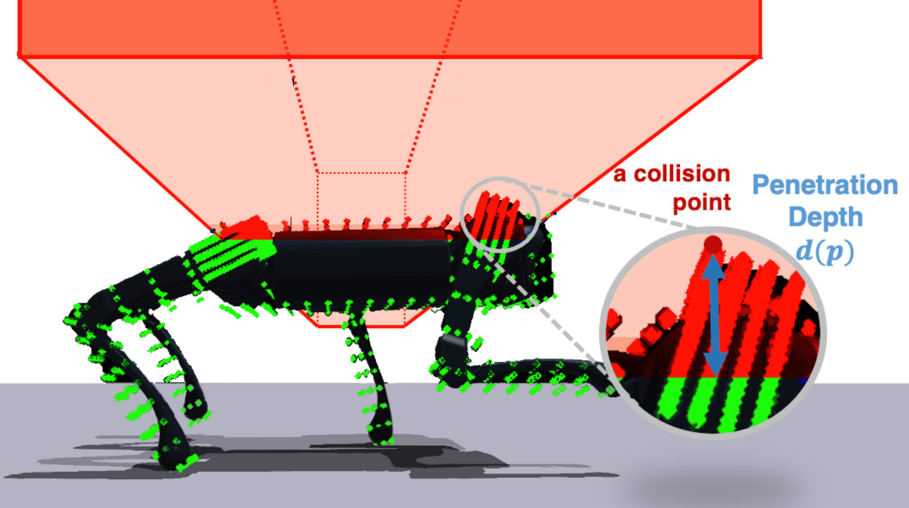
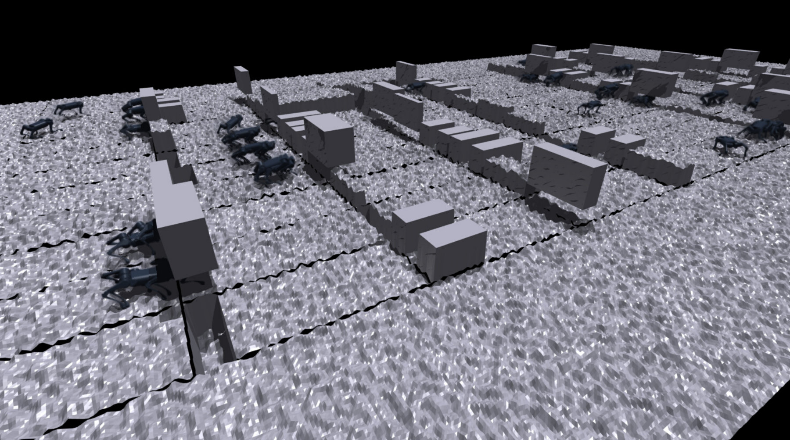
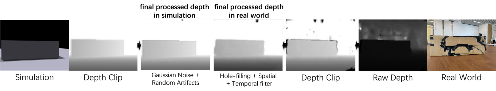
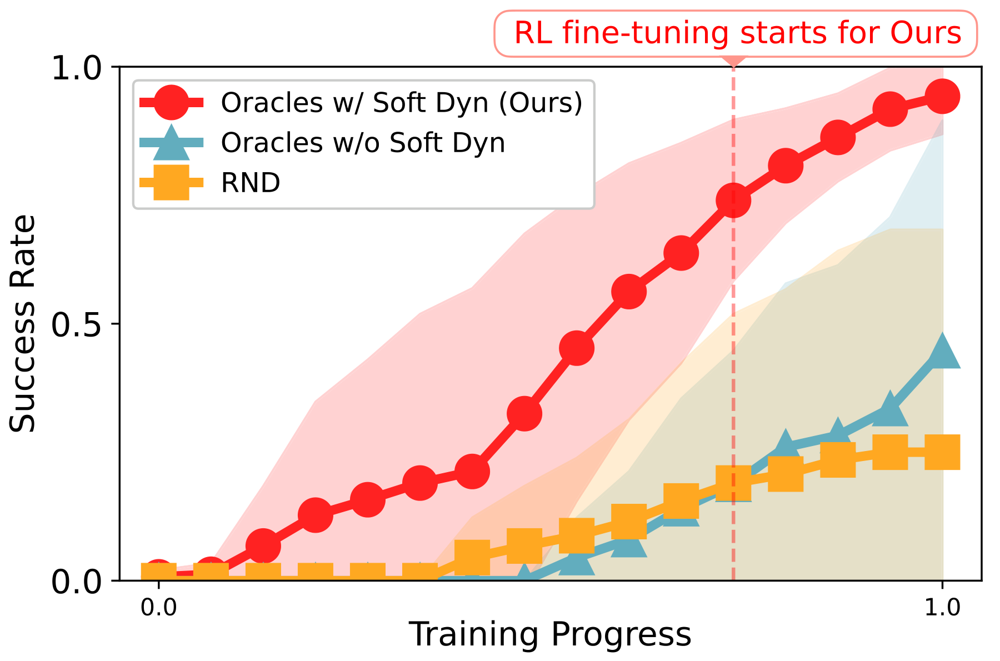
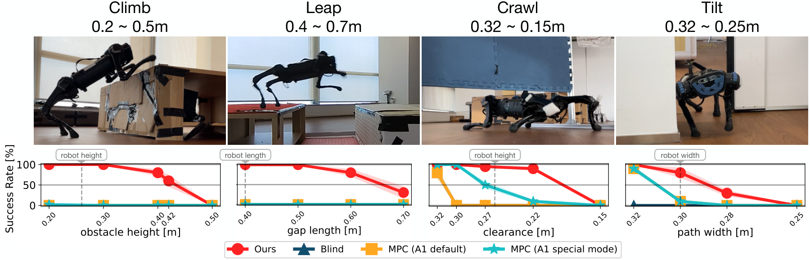

论文信息
- 题目：Robot Parkour Learning
- 作者：Ziwen Zhuang、Zipeng Fu、Jianren Wang、Christopher Atkeson、Sören Schwertfeger、Chelsea Finn、Hang Zhao
- 会议：Conference on Robot Learning（CoRL）2023，Oral
- 荣誉：Best Systems Paper Award Finalist（Top 3）
- 论文：arXiv:2309.05665
- 项目页：Robot Parkour Learning
- 代码：ZiwenZhuang/parkour
- 仿真器：Isaac Gym Preview 4
- 真机：Unitree A1、Unitree Go1
- 关键词：Soft Dynamics Constraints、PPO、DAgger、GRU、Depth Vision、Sim-to-Real
一句话结论
这篇论文用一个很巧妙的三阶段路线解决四足跑酷的探索难题：先暂时允许机器人少量穿过障碍，用穿透惩罚和自动课程学出攀爬、跨越、低姿爬行和侧身穿过的初始动作；再恢复真实硬碰撞微调；最后用 DAgger 把五个特权专家蒸馏成一个仅依赖机载深度图和本体感知的 GRU 策略。
可穿透障碍 + 穿透惩罚 + 难度课程 |

原论文图 1：同一套系统在低成本四足机器人上完成多类极端障碍技能。图片来源：Zhuang et al., 2023。
1. 论文真正要解决什么
跑酷策略必须同时满足三件事：
- Diverse：会跑、攀爬、跨沟、低头、侧身；
- Perceptive：从眼前障碍自主选择技能并调整动作；
- Deployable：在低成本机器人的机载算力、传感器噪声和电机限制下运行。
但这三件事彼此放大难度。如果从随机策略开始，真实硬障碍会让机器人在尚未探索到攀爬或起跳动作前就被挡住。再把深度图加入 RL，还会同时引入高维视觉、延迟和 Sim-to-Real 问题。
论文的工程回答是：先把“动作怎么学”和“视觉怎么选动作”拆开。
2. 五种专用技能
| 专家 | 任务 | 训练难度范围 |
|---|---|---|
| Climb | 爬上高障碍 | 0.20～0.45 m 高 |
| Leap | 飞跃沟隙 | 0.20～0.80 m 长 |
| Crawl | 从低矮障碍下爬过 | 0.32～0.22 m 净空 |
| Tilt | 侧身穿过窄缝 | 0.32～0.28 m 宽 |
| Run | 快速行走 | 无障碍 |
每个专家都用 GRU，输入包含：
- 29 维本体观测：roll、pitch、机身角速度、关节位置和速度；
- 上一时刻 12 维动作；
- 特权视觉信息：障碍距离、高度、宽度和类别 one-hot；
- 特权物理信息：摩擦、质量、重心、电机强度等。
输出是 12 个关节目标位置，而非直接力矩。
3. 为什么普通 PPO 很难学会 Climb 和 Leap
在真实 hard-contact 仿真中，未训练的机器人面对高墙时大概率只会：
向前走 → 撞墙 → 速度变为 0 → 持续得到差回报 |
空间中确实存在“先抬前腿、前倾机身、前腿拉升、后腿蹬地”的成功轨迹，但随机动作几乎不可能偶然命中它。
RND 这类好奇心奖励也未必有效：它鼓励到达“难预测”的状态，但窄缝爬行需要的是精细、可控的身体轨迹，而不是单纯的新奇状态。
4. 核心思想：把硬碰撞暂时变成软约束

原论文图 2：软约束阶段允许机器人与障碍重叠；硬约束阶段恢复真实碰撞。这是受 direct collocation 中 soft constraint 启发的探索延续方法。图片来源：Zhuang et al., 2023。
软动力学阶段把障碍设成可穿透。这不是要学一个真机上无法执行的穿墙策略，而是先打通从“完全不会”到“大致知道身体应该怎么运动”的梯度通道。
类比轨迹优化：难以一开始就严格满足的接触约束，可以先作为带惩罚的 soft constraint，再逐步收紧。
5. 穿透惩罚如何定义

原论文图 3：红色点位于障碍物内，用于近似穿透体积和深度。电机集中的肩/髋部布置更多采样点，以更强地保护真机脆弱区域。图片来源：Zhuang et al., 2023。
对机器人碰撞体内的采样点 ：
- 表示该点是否进入障碍；
- 表示该点距障碍表面的穿透深度。
穿透惩罚为：
同时惩罚“多少点穿进去”和“穿得多深”。乘以前向速度 是为了防止 reward hacking：否则策略可能以极高速度瞬间穿过障碍，减少被按时间累积的惩罚。
6. 自动难度课程怎样与软约束配合
每个并行机器人都有难度分数 ，初始为 0。episode 结束时：
- 穿透惩罚优于阈值： 增加 0.05；
- 表现太差： 减少 0.05。
障碍尺寸由线性插值得到：
这使训练保持在“可以前进，但还会有一些穿透”的学习边界。如果障碍太容易，策略不需要改进；如果一开始就是最难硬障碍，策略又得不到有用的成功信号。
7. 从 Soft Dynamics 到 Hard Dynamics
预训练接近收敛后，作者恢复真实碰撞，禁止任何穿透，并只使用通用技能奖励继续 PPO 微调。
通用奖励极其简洁：
它没有为 climb 手写“前脚搭上平台”，也没有为 leap 提供动物参考动作。在不同障碍几何与软约束课程中，同一个“向前 + 节能 + 存活”目标产生了不同动作。
这也解释了 Run 为什么不需要 soft-dynamics 阶段：它没有接触障碍导致的探索死区，可以直接在 hard dynamics 中训练。
8. 第三阶段：五个特权专家蒸馏成单一视觉策略

原论文补充图 7：蒸馏环境有 40 条 track，每条包含 20 个障碍，障碍类型与参数随机化。图片来源：Zhuang et al., 2023。
专家依赖障碍真值和物理特权信息，真机无法使用，而且每个专家只会一种技能。因此作者用 DAgger 训练单一策略：
仿真器知道当前障碍类型，所以在 climb 障碍处查询 climb expert，在 gap 处查询 leap expert。但这个类别不作为 Student 输入；Student 必须从深度图隐式判断该用哪种动作。
DAgger 用 Student 自己的动作推进环境，再在 Student 真正访问到的状态上请 expert 标注。这比只收集 expert 成功轨迹的离线行为克隆更能覆盖部署时的偏离与恢复状态。
9. 统一 Parkour Policy 的网络结构
48×64 depth image |
策略必须有记忆，因为在攀爬中前腿搭上平台后，机身已经靠得很近，相机可能看不完障碍的原始几何；后腿动作需要使用过去帧中的高度和距离信息。
消融中的 MLP 没有记忆，在 Climb 和 Leap 上几乎完全失败，也明显弱于 GRU 的 Crawl 和 Tilt。
10. 深度图 Sim-to-Real

原论文图 4：仿真端主动降质理想深度，真机端对 D435 输出做空洞填充和时空滤波，使两者更接近。图片来源：Zhuang et al., 2023。
10.1 仿真端
- depth clipping；
- pixel-level Gaussian noise；
- random artifacts。
10.2 真机端
- 相同的 depth clipping；
- hole filling；
- spatial smoothing；
- temporal smoothing。
这里与 Parkour in the Wild 的思路相似：不企图完整仿真双目成像物理，而是一边把仿真图变差，一边把真实图变稳定，在中间域对齐。
但这也存在代价：时间滤波可以减少闪烁空洞，却可能带来滞后。论文通过随机化前向深度延迟 s，让策略提前适应这种不确定性。
11. 不同频率如何协同
| 模块 | 频率 |
|---|---|
| D435 深度更新 | 10 Hz |
| Parkour policy | 50 Hz |
| PD 力矩控制 | 约 1000 Hz |
CNN 异步处理最新深度图，50 Hz GRU 在每个控制周期读取最新 visual embedding。因此同一张图的 embedding 会被重用多次，其间策略依靠本体观测和 GRU hidden state 继续更新动作。
动作是目标关节位置，PD 增益为 。为防止策略目标位置造成过大力矩，部署时根据当前 反算可安全产生 Nm 的目标位置范围，再对 action 做 clipping。
12. 结果怎么读
12.1 仿真消融
| 方法 | Climb | Leap | Crawl | Tilt | Run |
|---|---|---|---|---|---|
| Blind | 0% | 0% | 13% | 0% | 100% |
| MLP | 0% | 1% | 63% | 43% | 100% |
| No Distill | 0% | 0% | 73% | 0% | 100% |
| Ours | 86% | 80% | 100% | 73% | 100% |
| Privileged Oracles | 95% | 82% | 100% | 100% | 100% |
这张表支撑了四个结论：
- 没有视觉，极端技能无法在接触前准备；
- 没有 GRU，遮挡后的后半段动作缺少历史几何；
- 直接从深度图做多技能 PPO 探索失败；
- 蒸馏策略与 privileged oracle 仍有差距，尤其是 Tilt。
12.2 Soft dynamics 真的必要吗

原论文图 5：带 soft dynamics 预训练的专家学得更快，最终平均成功率约 95%；RND 和从硬碰撞直接训练都无法学会最难的 Climb 和 Leap。图片来源：Zhuang et al., 2023。
这不只是训练速度优势。对 Climb 和 Leap，没有 soft dynamics 的 oracle 成功率也是 0%，说明硬碰撞导致的探索局部最优是结构性问题。
12.3 真机结果

原论文图 6：视觉 parkour policy 与 blind policy、A1 内置 MPC 及人工切换特殊姿态的 MPC 对比。每个难度进行 10 次试验。图片来源：Zhuang et al., 2023。
A1 上报告的代表性能力：
- 0.40 m 高障碍（机器人高度的 1.53 倍）：80% 成功率；
- 0.60 m 沟隙（机器人长度的 1.5 倍）：80%；
- 0.20 m 净空低障碍（机器人高度的 0.76 倍）：90%；
- 0.28 m 宽窄缝（小于机器人自身宽度）：可侧身通过。
户外还展示了河边 0.6 m 断开石凳、0.42 m 连续高台阶、露营车下方爬行和湿滑草地。
13. 涌现的重试行为
攀爬高障碍首次失败时，策略会把自己从墙边推开，留出助跑空间，然后再次尝试。
作者没有编写“检测攀爬失败 → 后退 → 重试”状态机。该行为来自：
- GRU 能记住刚才的失败状态；
- 向前进展奖励使得卡在墙边没有价值；
- 训练分布中存在偏离和恢复状态；
- 后退虽然短期远离目标，却可以改善下一次助跑的长期回报。
这是单一 recurrent policy 相比手工 skill switch 的一个优势：失败恢复和技能执行处在同一闭环中。
14. 这篇与 ANYmal Parkour、Parkour in the Wild 的区别
| 工作 | 核心训练思想 | 统一方式 | 感知输入 |
|---|---|---|---|
| Robot Parkour Learning（2023） | Soft dynamics 探索 → hard dynamics 微调 | DAgger，无统一 RL 微调 | 单目 egocentric depth |
| ANYmal Parkour（2023/2024） | 专用 locomotion skill + 高层 navigation | 层级系统选技能 | elevation map / perception modules |
| Parkour in the Wild（2025/2026） | 九专家蒸馏 → 多地形 RL 微调 | 蒸馏后再统一 RL | 四路 depth images |
Robot Parkour Learning 首先强调的是极难动作如何被探索出来。Parkour in the Wild 则更关心已有多专家如何合并、修复蒸馏损失并泛化到新地形。
另一个关键差别是：本文统一 Student 停留在 DAgger 目标上，因此其上限严重受各专家和蒸馏冲突约束；Parkour in the Wild 后来增加的 RL fine-tuning 正是为了让 Student 可以偏离专家、修复冲突并创造新的技能组合。
15. 论文的局限性
15.1 环境和技能仍然是人工定义
作者需要手工构建 climb、leap、crawl 和 tilt 障碍生成器。新技能需要新的环境和 expert，并不是开放世界中自动发现任意技能。
15.2 软动力学存在仿真利用风险
穿透惩罚、采样点分布和课程速度如果设计不当，策略可能学会依赖虚假穿透。硬约束微调是必需的，但不保证所有软约束动作都能被修复。
15.3 深度缺少语义和材质信息
同样的几何可能是硬木箱、软垫或湿滑表面。深度图无法直接区分它们，低摩擦 leap 也是项目页列出的失败案例。
15.4 成功边界仍然明显
作者列出的失败包括：
- 0.8 m 高障碍，约为机器人高度的 3 倍；
- 低摩擦平台上起跳，后腿滑动导致前向动量不足；
- 高且柔软的障碍。
这些失败共同指向动力学可行性与材质感知，而不只是“网络再大一点”。
16. 如果我要复现，建议怎么拆
Step 1：先用 Run 打通真机链路
它不需要 soft dynamics，适合先验证 12 维关节目标、PD、力矩 clipping、本体延迟和动力学随机化。
Step 2：只做一个 Climb expert
保留三组对比：
hard dynamics PPO |
同时记录 success、penetration volume、penetration depth、功率和硬约束切换后的性能回落。
Step 3：可视化穿透采样点
重点检查肩/髋电机区域是否有足够高的惩罚密度，以及策略是否找到采样点稀疏区域穿墙。
Step 4：再加 Leap、Crawl 和 Tilt
不要过早训练统一策略。先确保每个 privileged oracle 在超出训练范围的 test obstacle 上仍有一定泛化。
Step 5：实现 Depth CNN + GRU DAgger
蒸馏时必须由 Student rollout，并分别记录每种技能的 action error，否则 Run 等容易地形的数据量可能掩盖 Climb/Leap 失败。
Step 6：单独建立视觉延迟测试
测试 10 Hz 图像在 50 Hz policy 中重复使用，并扫描 0～300 ms 延迟、丢帧、空洞和 temporal filter 强度。对 Leap 而言，延迟会直接改变起跳时机，应作为安全关键指标。
17. 容易误读的地方
误读 1：软动力学就是降低障碍难度
不只是把障碍变矮或变宽。它直接放松了不可穿透约束，改变了可访问状态空间的拓扑结构。
误读 2：最终策略会显式选择五个 skill ID
Student 没有输入障碍类别，也不是高层 selector + 低层 expert。技能识别、切换和执行都被压入同一个 GRU policy。
误读 3：五个专家都直接看深度图
专家看的是障碍距离、尺寸、类别和物理参数真值。只有蒸馏后 Student 使用可部署深度图。
误读 4：同一奖励意味着完全没有人工设计
奖励很简单，但每种技能的障碍生成器、速度命令、穿透权重和课程范围仍是人工设计的。
误读 5：Soft-to-hard 就是 Sim-to-Real
Soft-to-hard 解决仿真内的探索问题。Sim-to-Real 还需要质量、重心、摩擦、电机强度、相机位姿/FOV、视觉和本体延迟随机化，以及深度处理和真机力矩保护。
18. 我认为最值得记住的三点
18.1 探索失败可能来自约束，而不是奖励不够复杂
当硬碰撞把几乎所有随机轨迹挡在障碍前时，再加更多 reward term 不一定有用。暂时放松约束可能比奖励塑形更直接。
18.2 不可行轨迹也可以作为通向可行轨迹的脚手架
软约束预训练中的动作不能直接部署，却可以帮助策略找到正确的动作拓扑，再在硬约束中修正成物理可行轨迹。
18.3 视觉统一策略的价值不只是减少网络数量
单一 recurrent policy 可以在连续障碍之间自主过渡，并把失败恢复也纳入同一个闭环。这比人工切换 MPC 特殊模式更接近真正的自主跑酷。
19. 最终评价
Robot Parkour Learning 最亮眼的地方不是某一个动作纪录，而是它用统一方法解决了几种完全不同的极端探索问题。
它的训练逻辑非常值得复用：
若严格约束让成功状态几乎无法被探索， |
同时，它也为后续 Parkour in the Wild 留下了清晰问题：纯 DAgger 统一仍受 expert 上限、动作冲突和视觉差异限制；如何在蒸馏后再用 RL 让 generalist 超越 expert，是自然的下一步。